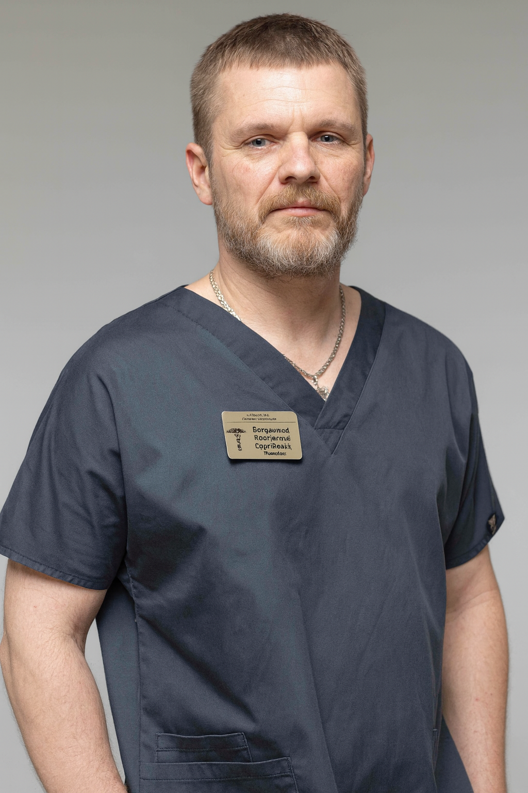

+38(068)
79 72 782
+38(068)
79 72 782Консультация нарколога в Люботине
Первый шаг к восстановлению здоровья


Бесплатная консультация, работаем круглосуточно 24/7
Первый шаг к восстановлению здоровья
Дата написания: 24 окт. 2026 г.
Последнее обновление: 24 окт. 2026 г.
Консультация нарколога в Люботине — возможность получить квалифицированную медицинскую помощь при алкогольной, наркотической и других формах зависимости, оценить состояние здоровья и определить дальнейшую тактику лечения. Обращение к специалисту необходимо не только при выраженной интоксикации или продолжительном запое, но и при первых признаках формирования зависимости, изменениях поведения, нарушениях сна и невозможности самостоятельно отказаться от употребления психоактивных веществ. Своевременная консультация помогает выявить потенциально опасные симптомы, предупредить осложнения и подобрать безопасные методы медицинской помощи. Жители Люботина могут обратиться за консультацией нарколога по вопросам вывода из запоя, лечения алкогольной зависимости, наркотической абстиненции, детоксикации и подготовки к кодированию. В зависимости от клинической ситуации консультация может проводиться в медицинском учреждении или на дому, если состояние пациента позволяет организовать осмотр вне стационара.
Необходимость консультации нарколога возникает при появлении физических, психологических и поведенческих признаков зависимости. На ранних стадиях человек может не замечать постепенного увеличения количества употребляемого алкоголя, потери контроля над дозировкой и формирования привычки регулярно употреблять спиртные напитки. По мере развития заболевания появляются нарушения сна, раздражительность, эмоциональная нестабильность, снижение работоспособности и ухудшение отношений с окружающими. Особого внимания требуют ситуации, когда попытки отказаться от алкоголя сопровождаются дрожью в руках, выраженной тревогой, потливостью, тошнотой, учащённым сердцебиением и повышением артериального давления. Консультация нарколога при алкогольной зависимости позволяет установить возможную связь этих симптомов с употреблением спиртного и определить необходимость медицинского вмешательства.
Многие пациенты откладывают обращение к наркологу из-за опасений относительно разглашения диагноза, профессиональной репутации или возможных социальных последствий. Анонимная консультация нарколога в Люботине предполагает деликатное общение, защиту медицинской информации и соблюдение врачебной тайны в установленных законодательством пределах. Информация о состоянии здоровья, употреблении алкоголя или наркотических веществ относится к конфиденциальным медицинским данным и не должна произвольно передаваться посторонним лицам. Само по себе обращение за консультацией не означает автоматической постановки пациента на диспансерное наблюдение. Вместе с тем конфиденциальность не отменяет обязательного ведения медицинской документации и предусмотренных законом исключений из врачебной тайны. Во время консультации врач уточняет жалобы, продолжительность употребления психоактивных веществ, особенности предыдущего лечения и наличие хронических заболеваний.
Вызов нарколога на дом в Люботине может быть удобным вариантом для пациентов, испытывающих слабость, тревожность, умеренные симптомы алкогольной отмены или трудности с самостоятельным посещением медицинского учреждения. Домашняя консультация предусматривает сбор анамнеза, оценку общего состояния, измерение основных жизненных показателей и определение дальнейшей тактики медицинской помощи. Врач выясняет, когда пациент последний раз употреблял алкоголь или другие психоактивные вещества, какие препараты принимал самостоятельно и наблюдались ли ранее осложнения. Преимущество домашнего осмотра заключается в возможности получить первичную медицинскую оценку в привычной обстановке. Однако консультация нарколога на дому не всегда может заменить обследование в стационаре. При тяжёлой абстиненции, судорогах, психозе, подозрении на передозировку или выраженных нарушениях работы внутренних органов необходима госпитализация.
Первичная консультация начинается с подробного разговора с пациентом и выяснения основных причин обращения. Нарколог оценивает продолжительность и регулярность употребления алкоголя или наркотических веществ, количество употребляемого вещества, наличие эпизодов потери контроля и симптомы, возникающие при попытке прекратить употребление. Отдельное внимание уделяется предыдущим запоям, случаям госпитализации, судорожным приступам, психическим расстройствам и хроническим заболеваниям. После сбора информации проводится клинический осмотр. Врач оценивает уровень сознания, ориентацию, речь, координацию движений, выраженность тремора, состояние кожи и слизистых оболочек, частоту пульса, дыхание и артериальное давление. При необходимости применяются клинические шкалы для оценки тяжести синдрома отмены. По результатам осмотра специалист объясняет пациенту предполагаемые причины ухудшения самочувствия, обсуждает возможные обследования и предлагает дальнейшую тактику лечения.
Объём обследования зависит от клинической картины, предполагаемой формы зависимости, продолжительности употребления психоактивных веществ и наличия сопутствующих заболеваний. При подозрении на осложнения хронического употребления алкоголя врач может рекомендовать общий анализ крови, определение уровня глюкозы, исследование электролитов, показателей функции печени и почек. При выраженной тахикардии, жалобах на боль в груди или нарушениях сердечного ритма может потребоваться электрокардиография и дополнительное обследование сердечно-сосудистой системы. При наркотической зависимости особое значение имеют сведения о типе употребляемых веществ, возможном сочетании нескольких препаратов и риске передозировки. В зависимости от ситуации могут назначаться токсикологические исследования, анализы на инфекции и консультации смежных специалистов. Лабораторные исследования не являются обязательными для каждого пациента и подбираются индивидуально.
Алкогольная зависимость представляет собой хроническое заболевание, которое сопровождается нарушением контроля над употреблением спиртного, изменением поведения и повышенным риском соматических и психических осложнений. Пациент может продолжать употреблять алкоголь, несмотря на ухудшение здоровья, семейные конфликты и профессиональные проблемы. В отдельных случаях формируются физическая зависимость и выраженный синдром отмены, из-за которых самостоятельное прекращение употребления становится потенциально опасным. Лечение алкогольной зависимости в Люботине целесообразно начинать с консультации нарколога, во время которой определяются тяжесть заболевания, выраженность тяги к спиртному и наличие факторов, способствующих повторным эпизодам употребления. Врач может рекомендовать медикаментозное лечение по показаниям, психотерапевтическую поддержку, работу с родственниками и длительное наблюдение.
Продолжительный запой сопровождается повышенной нагрузкой на сердечно-сосудистую, нервную и пищеварительную системы. Регулярное употребление значительных доз спиртного может приводить к обезвоживанию, нарушениям электролитного баланса, дефициту витаминов, колебаниям артериального давления и ухудшению работы печени. После резкого прекращения употребления у зависимого человека возможно развитие алкогольного абстинентного синдрома, проявляющегося тремором, потливостью, тревожностью, тошнотой, бессонницей и учащённым сердцебиением. Во время консультации нарколог определяет степень риска осложнений и необходимость медикаментозной терапии. Вывод из запоя на дому в Люботине может рассматриваться только при отсутствии признаков тяжёлой абстиненции и других противопоказаний. При наличии показаний специалист оценивает необходимость инфузионной терапии, коррекции дефицита жидкости и электролитов, назначения лекарственных средств и последующего наблюдения. Капельница от алкоголя не является универсальным способом лечения запоя и не заменяет полноценной оценки состояния. При риске алкогольного делирия, судорог, выраженного обезвоживания или нестабильных жизненных показателях пациенту требуется стационарная помощь.
Наркотическая зависимость может развиваться при употреблении опиоидов, стимуляторов, седативных препаратов и других психоактивных веществ. Особенности заболевания зависят от механизма действия вещества, частоты употребления, продолжительности зависимости и индивидуального состояния организма. Некоторые пациенты обращаются за помощью после появления выраженной тяги, другие — при ухудшении памяти, тревожности, бессоннице, эмоциональной нестабильности или невозможности самостоятельно прекратить употребление. Консультация нарколога при наркотической зависимости предусматривает оценку типа употребляемых веществ, возможных симптомов отмены, рисков передозировки и наличия сопутствующих психических или соматических нарушений. Врач обсуждает доступные методы лечения, включая специализированную медикаментозную терапию, психологическую помощь и реабилитационные программы. При опиоидной зависимости могут применяться доказательные методы поддерживающего лечения при наличии соответствующих показаний. Важно учитывать, что эффективная помощь не ограничивается кратковременной детоксикацией: длительная поддержка, предупреждение рецидивов и восстановление социальной активности имеют существенное значение для результата лечения.
Наркотическая ломка развивается после прекращения или значительного уменьшения употребления вещества, к которому сформировалась физическая зависимость. Клинические проявления различаются в зависимости от типа препарата. При отмене опиоидов возможны боли в мышцах, выраженное беспокойство, насморк, слезотечение, потливость, нарушения сна, тошнота и диарея. Отмена некоторых седативных и снотворных препаратов может сопровождаться значительно более опасными осложнениями, включая судороги и нарушения сознания. Лечение наркотической ломки должно учитывать вид психоактивного вещества, тяжесть симптомов и общее состояние пациента. Нарколог определяет необходимость симптоматической терапии, медикаментозной поддержки, наблюдения или госпитализации. Самостоятельное сочетание обезболивающих, транквилизаторов, алкоголя и других препаратов повышает риск тяжёлых побочных реакций. Особенно опасны ситуации, когда пациент употреблял несколько веществ одновременно. При угнетении дыхания, потере сознания или подозрении на передозировку требуется немедленная экстренная помощь. После стабилизации состояния пациенту рекомендуется продолжить лечение зависимости, поскольку устранение симптомов отмены само по себе не предотвращает повторное употребление.
Родственники человека с алкогольной или наркотической зависимостью нередко сталкиваются с ситуацией, когда пациент отказывается признавать заболевание и категорически не желает обращаться к врачу. В подобных обстоятельствах консультация нарколога может проводиться с членами семьи для получения общих рекомендаций относительно общения, распознавания опасных симптомов и организации дальнейшей помощи. Консультация нарколога для родственников позволяет разобраться в характерных проявлениях зависимости, особенностях поведения пациента и допустимых способах мотивации к лечению. Специалист может объяснить, какие симптомы требуют немедленного медицинского вмешательства и каких действий следует избегать. При этом без личного осмотра пациента невозможно достоверно оценить его клиническое состояние, установить окончательный диагноз или назначить индивидуальное лечение. Получение информации от родственников не заменяет непосредственного общения врача с человеком, которому требуется помощь.
Отрицание проблемы является распространённой причиной позднего обращения за медицинской помощью. Человек с алкогольной зависимостью может объяснять употребление стрессом, усталостью или семейными обстоятельствами, не замечая постепенного ухудшения здоровья. Давление, угрозы и постоянные обвинения часто усиливают сопротивление и затрудняют конструктивный разговор. Более эффективный подход предполагает спокойное обсуждение конкретных последствий употребления и предложение профессиональной консультации. Родственникам рекомендуется выбирать для разговора время, когда человек трезв и способен воспринимать информацию. Важно говорить о наблюдаемых изменениях здоровья, поведения и повседневной жизни, избегая унижения и конфликтов. Иногда первым этапом становится анонимная консультация нарколога, которая помогает пациенту получить достоверную информацию о заболевании без обязательства немедленно начинать определённый вид лечения.
Перед проведением процедуры кодирования необходимо оценить состояние здоровья пациента, установить особенности алкогольной зависимости и обсудить ожидаемые результаты выбранного метода. Кодирование от алкоголизма в Люботине может включать различные медикаментозные и психотерапевтические подходы, однако эффективность и ограничения каждого из них существенно различаются. Наиболее изученные медикаментозные методы лечения алкогольной зависимости связаны с применением препаратов на основе дисульфирама или налтрексона по соответствующим показаниям. Во время консультации врач выясняет продолжительность периода трезвости, наличие хронических заболеваний, перенесённые осложнения, принимаемые лекарства и предыдущий опыт лечения. При необходимости назначаются дополнительные обследования. Кодирование уколом от алкоголизма или применение других медикаментозных методов не должно проводиться без оценки противопоказаний. Продолжительность воздержания от алкоголя перед процедурой определяется индивидуально и зависит от выбранного препарата, текущего состояния и риска синдрома отмены.
Эффективность наркологической помощи во многом зависит от правильной оценки клинического состояния и подбора лечения с учётом индивидуальных особенностей пациента. Универсальная схема, одинаково подходящая каждому человеку, не существует. При составлении программы учитываются продолжительность зависимости, характер употребляемых веществ, перенесённые осложнения, возраст, сопутствующие заболевания, психическое состояние и готовность пациента участвовать в лечении. Индивидуальная программа лечения алкогольной зависимости может включать медицинскую стабилизацию, коррекцию симптомов отмены, фармакотерапию для профилактики рецидивов, психотерапию и последующее наблюдение. При наркотической зависимости могут потребоваться специализированные программы медикаментозного лечения, реабилитация и длительная психологическая поддержка. Нарколог также помогает определить факторы, провоцирующие повторное употребление: хронический стресс, тревожные расстройства, нарушения сна, семейные конфликты и особенности социального окружения.
Несмотря на возможность проведения отдельных консультаций и лечебных мероприятий в домашних условиях, некоторые состояния требуют постоянного врачебного наблюдения. Госпитализация может быть необходима при тяжёлом алкогольном абстинентном синдроме, повторных судорожных приступах, алкогольном делирии, психозе, выраженной дезориентации и нестабильных жизненных показателях. Дополнительными факторами риска являются тяжёлые заболевания сердца, печени, почек, выраженное обезвоживание и подозрение на сочетанное отравление несколькими психоактивными веществами. Наркологический стационар обеспечивает возможность проведения расширенного обследования, непрерывного мониторинга состояния, коррекции опасных нарушений и своевременного реагирования на осложнения. При тяжёлой интоксикации или угнетении дыхания может потребоваться помощь отделения неотложной медицины или интенсивной терапии.
Стоимость консультации нарколога в Люботине начинается от 1500 грн.
| Популярные услуги | Цена |
|---|---|
| Нарколог Харьков | От 1500 грн |
| Капельница от алкоголя | От 2199 грн |
| Вывод из запоя на дому | От 2199 грн |
| Кодирование от алкоголизма | От 6000 грн |
Сертификат психиатра-нарколога — распространённое название медицинского документа, подтверждающего прохождение предусмотренного законодательством обследования. Такой документ может потребоваться при трудоустройстве на отдельные должности, допуске к определённым видам профессиональной деятельности или прохождении установленных медицинских осмотров. В Украине для соответствующих психиатрических осмотров, в том числе на предмет употребления психоактивных веществ, используется справка по форме № 100-2/о. Оформление официальной справки предполагает проведение предусмотренного обследования уполномоченным медицинским учреждением или специалистом, имеющим необходимые законные основания для осуществления соответствующей деятельности. Врач оценивает состояние психического здоровья, возможные противопоказания и другие показатели, имеющие значение для конкретного вида деятельности.
Скорость организации консультации зависит от текущей доступности специалиста, формата медицинской помощи, адреса пациента и загруженности выездной службы. При обращении желательно кратко описать симптомы, сообщить возраст пациента, продолжительность употребления алкоголя или других веществ, время последнего приёма и наличие хронических заболеваний. Эта информация позволяет предварительно оценить срочность ситуации и определить, подходит ли домашний осмотр. Срочный вызов нарколога в Люботине особенно актуален при ухудшении самочувствия после длительного употребления алкоголя, выраженной тревожности, треморе и других признаках возможного синдрома отмены. Однако даже при оперативной организации консультации нельзя исключать развитие осложнений. При судорогах, нарушении сознания, галлюцинациях, затруднённом дыхании или подозрении на тяжёлую передозировку следует немедленно обращаться за экстренной медицинской помощью. Ожидание планового визита в таких обстоятельствах может представлять угрозу жизни.
Анонимная наркологическая помощь в Люботине направлена на своевременное выявление алкогольной и наркотической зависимости, оценку состояния пациента и выбор безопасной тактики лечения. Обратиться за консультацией можно при первых признаках формирования зависимости, повторяющихся запоях, появлении симптомов отмены, необходимости подготовки к кодированию или желании получить профессиональные рекомендации относительно восстановления здоровья. Круглосуточный формат работы наркологической службы позволяет обращаться за информацией о доступной помощи в вечернее и ночное время, выходные и праздничные дни. При этом возможность немедленного выезда и лечения на дому зависит от доступности медицинской бригады и состояния пациента. Консультация проводится с уважением к личной информации, соблюдением медицинской этики и учётом индивидуальных потребностей человека. Телефон для консультации и вызова нарколога на дом в Харькове: +38(050-021-69-57)

Статья проверена экспертом
Богоденко Констянтин
Врач анастезиолог, ординатор
Возможно интересная статья:
Чего боятся алкоголики больше всего

Начинать лечение стоит уже тогда, когда употребление алкоголя становится регулярным, человеку сложно контролировать количество выпитого, появляются запои, абстинентный синдром, проблемы со здоровьем, работой или отношениями с близкими. Чем раньше человек обращается за помощью, тем меньше риск тяжёлых осложнений и прогрессирования зависимости.
Алкогольная зависимость относится к хроническим расстройствам, однако при правильно подобранном лечении можно добиться длительной устойчивой ремиссии и полностью отказаться от употребления алкоголя. Результат зависит от мотивации пациента, тяжести зависимости, продолжительности употребления и соблюдения рекомендаций врача.
Лечение начинается с консультации и оценки состояния пациента. Врач уточняет длительность и характер употребления алкоголя, наличие запоев, симптомы абстиненции, хронические заболевания и предыдущие попытки лечения. Если пациент находится в запое или испытывает выраженный синдром отмены, первым этапом может быть детоксикация и стабилизация состояния.
Отдельные этапы лечения алкогольной зависимости могут проводиться на дому. Это может быть вывод из запоя, детоксикация, лечение лёгкого или умеренного абстинентного синдрома, консультация врача и последующее медикаментозное сопровождение.
Стационар может потребоваться при тяжёлом абстинентном синдроме, длительном запое, судорогах, галлюцинациях, спутанности сознания, подозрении на алкогольный делирий, выраженных нарушениях давления или сердечного ритма, а также при тяжёлых сопутствующих заболеваниях. В стационаре состояние пациента можно контролировать круглосуточно.
Если пациент находится в запое, первым этапом обычно становится безопасное прекращение употребления алкоголя и лечение абстинентного синдрома. После стабилизации физического состояния можно переходить к дальнейшему лечению зависимости, противорецидивной терапии, психотерапии и другим методам.
Лечение может включать медикаментозную терапию, детоксикацию, противорецидивное лечение, психотерапию, работу с мотивацией, кодирование и реабилитационные программы. Обычно наибольшую эффективность даёт комплексный подход, когда врач подбирает методы с учётом состояния и особенностей конкретного пациента.
Кодирование может использоваться как один из этапов лечения алкогольной зависимости. Его задача — помочь человеку сохранять трезвость и снизить риск употребления алкоголя в определённый период. При этом кодирование не устраняет все психологические и поведенческие причины зависимости, поэтому часто сочетается с консультациями специалиста, психотерапией и другими методами лечения.
Плановое лечение алкогольной зависимости обычно проводится при информированном согласии самого пациента. Если человек не хочет лечиться, родственники могут обратиться за консультацией и обсудить со специалистом способы мотивации к лечению. При состояниях, представляющих непосредственную угрозу жизни или здоровью, необходима экстренная медицинская помощь.
Давление, угрозы и постоянные конфликты часто усиливают сопротивление. Родственникам лучше спокойно обсуждать конкретные последствия употребления и предлагать консультацию специалиста. Может использоваться мотивационная беседа, цель которой — помочь человеку увидеть проблему и самостоятельно принять решение о начале лечения.
После стабилизации важно продолжать лечение и не ограничиваться только детоксикацией или выводом из запоя. Снизить риск срыва помогают регулярные консультации специалиста, психотерапия, противорецидивное лечение, отказ от ситуаций, связанных с употреблением алкоголя, поддержка близких и изменение привычного образа жизни.
Реабилитация требуется не каждому пациенту в одинаковом объёме, однако при сформированной зависимости, повторных запоях и частых срывах она может существенно дополнять основное лечение. Реабилитационная программа помогает работать с психологическими причинами употребления, формировать новые привычки и навыки трезвой жизни и снижать риск возвращения к алкоголю.
Анонимно

Ну в хлопців просто золоті руки й світла голова, мене капали Олексій та Владислав, буквально за декілька сеансів я наче заново народився, до цього пив більше 3х тижнів, не міг зупинитись, дуже радий що знайшов саме цих спеціалістів, всім рекомендую
Анонимно
В течение нескольких лет я злоупотреблял алкоголь, что привело к увольнению с работы и вызвало у меня мысли о суициде. Понимая, что такой образ жизни неприемлем, я обратился за помощью в клинику “Амбрела”. Здесь я смог преодолеть свою зависимость от спиртного благодаря заботливым и опытным врачам, а также эффективной системе лечения. Спустя более года я полностью избавился от желания употреблять алкоголь, и теперь моя жизнь вернулась в норму. Я даже не приближаюсь к спиртному! Благодарю врачей клиники “Амбрела” за их помощь и заботу.
Анонимно
Я обращался за помощью в различные клиники, пытаясь избавиться от своей зависимости от алкоголя, но без особых успехов. Никак не мог справиться с желанием прибегнуть к бутылке, пока друг не посоветовал мне обратиться в центр “Амбрелла”. Я записался на прием и был поражен заботливым отношением к пациентам. Уже прошло два года, и теперь я смотрю на алкоголь с абсолютной равнодушием, активно занимаюсь спортом и улучшил отношения в семье. Благодаря центру “Амбрелла” моя жизнь была спасена от алкогольной зависимости!
Анонимно
Хочу выразить свою благодарность врачам из центра алкоголизма “Амбрела” за то, что они буквально спасли мою жизнь. В течение последнего года я сильно увлекался питьем, и все это привело к катастрофическим последствиям. Хотя я ходил на терапевтические сеансы, но безрезультатно. Тогда я нашел адрес клиники “Амбрела” в интернете, изучил отзывы и информацию о центре, и записался на прием. Там мне сразу предложили методику лечения, которая помогла не только справиться с физической ломкой, но и психической зависимостью от алкоголя. Не буду распространяться, скажу только одно - после пребывания в этой клинике я стал другим человеком, и навсегда забыл, что такое привкус алкоголя. Больше меня не тянет на это! Я искренне верю, что в центре “Амбрела” трудятся настоящие целители душ!
Анонимно
После сложного развода мой сын начал подавлять свою обиду и горе употреблением алкоголя. Он старался скрывать это от меня, но я, как мать, почувствовала, что что-то не так. В конечном итоге, ситуация стала критической. Моя знакомая посоветовала мне обратиться в клинику “Амбрела”. Я была приятно удивлена их работой! Они помогли сыну преодолеть очередной период злоупотребления алкоголем, и с тех пор прошел уже более года, и он совсем не пьет.
Анонимно
Благодаря вашей помощи, моя семья была спасена. Я с трудом уговорила мужа начать лечение, и последний каплей был пьяное ДТП. К счастью, в аварии никто не пострадал, но это был для него сигнал к действию. Он наконец согласился пройти курс лечения на дому, в стационар не хотел ложиться. Лечение было трудным, и были моменты, когда срыв был настолько близок, но благодаря вашему центру Амбрелла мы справились с этим.
Анонимно
Для меня эта клиника стала настоящим спасением! Долгое время я упорно отказывался от лечения, уверен был, что со мной все в порядке. Но к счастью, семья уговорила меня попробовать. И сегодня я чувствую себя невероятно счастливым, осознавая, что мне абсолютно не нужен алкоголь. Огромное спасибо за помощь и поддержку, которые я получил здесь! Я благодарен вам за новую возможность жить полноценной и счастливой жизнью!
Анонимно
Выражаю благодарность ребятам, которые оказали мне помощь и не отвернулись. Уже 10 месяцев я остаюсь чистой. Благодарю за то, что помогли найти новый путь в моей жизни.
Номер телефона:
+380 (68) 797 27 82
+380 (50) 021 69 57
Адрес наркологического центра вашего города уточняйте по
телефону
Работаем в: Киеве, Одессе, Львове, Харькове, Днепре,
Запорожье, Черкассах, Чугуеве, Черноморске, Каменском
Telegram: t.me/umbrellaplus
График работы: Круглосуточно